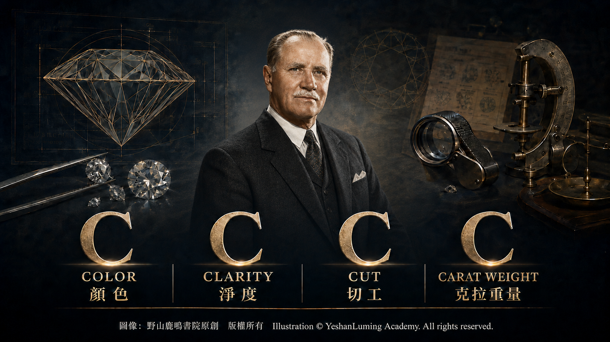
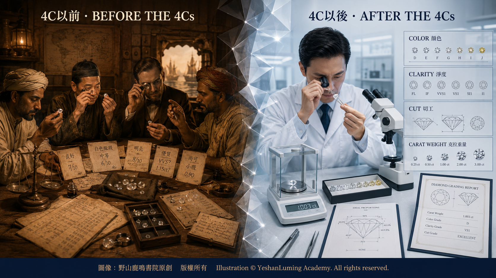

4C的誕生·一套改變鑽石世界的標準The Birth of the 4Cs: A Standard That Changed the Diamond World
The World of Gemstones · Diamond SeriesThe Birth of the 4Cs: A Standard That Changed the Diamond World
The World of Gemstones · Diamond Series4C的誕生·一套改變鑽石世界的標準
寶石世界·鑽石篇
寶石世界·鑽石篇（114）The World of Gemstones · Diamond Series (114)
在前面的文章中，我們談到了什麼是鑽石，鑽石是如何形成的，它們又是如何從地下深處來到地球表面，以及世界主要鑽石產地等方面的基本知識。
在接下來的文章中，我們將繼續介紹鑽石本身，包括鑽石的品質標準、價值如何確立，以及如何分辨天然鑽石、實驗室培育鑽石和鑽石仿製品等方面的內容。
在鑽石的世界裡，有一個幾乎無法迴避的問題：兩顆看起來相似的鑽石，為什麼價格可以相差數倍，甚至數十倍？如果沒有一套清晰、統一並被市場普遍接受的標準，人們就很難比較鑽石的品質，也難以建立市場的信心和信任。
今天的鑽石市場，已經擁有一套成熟的，而且得到世界鑽石行業與廣大消費者普遍認可的品質評價標準，這就是著名的「4C」。
所謂4C，是指四個英文單詞的首字母都是C。這四個單詞，代表評價鑽石品質的四項基本要素。它們分別是：
Carat Weight（克拉重量）、
Color（顏色）、
Clarity（淨度）、
Cut（切工）。
這四項指標，構成了現代鑽石品質評價的基礎。然而，這套今天看來似乎理所當然的標準，並不是從一開始就存在的，而是在20世紀逐步形成和完善的。
從寶石學的角度看，鑽石的品質確實可以從這四個主要方面進行觀察、分析和比較。
在前面的文章中，我們談到了什麼是鑽石，鑽石是如何形成的，它們又是如何從地下深處來到地球表面，以及世界主要鑽石產地等方面的基本知識。
在接下來的文章中，我們將繼續介紹鑽石本身，包括鑽石的品質標準、價值如何確立，以及如何分辨天然鑽石、實驗室培育鑽石和鑽石仿製品等方面的內容。
在鑽石的世界裡，有一個幾乎無法迴避的問題：兩顆看起來相似的鑽石，為什麼價格可以相差數倍，甚至數十倍？如果沒有一套清晰、統一並被市場普遍接受的標準，人們就很難比較鑽石的品質，也難以建立市場的信心和信任。
今天的鑽石市場，已經擁有一套成熟的，而且得到世界鑽石行業與廣大消費者普遍認可的品質評價標準，這就是著名的「4C」。
所謂4C，是指四個英文單詞的首字母都是C。這四個單詞，代表評價鑽石品質的四項基本要素。它們分別是：
Carat Weight（克拉重量）、
Color（顏色）、
Clarity（淨度）、
Cut（切工）。
這四項指標，構成了現代鑽石品質評價的基礎。然而，這套今天看來似乎理所當然的標準，並不是從一開始就存在的，而是在20世紀逐步形成和完善的。
從寶石學的角度看，鑽石的品質確實可以從這四個主要方面進行觀察、分析和比較。
但是在早期，這些概念並沒有被系統化，也沒有統一的分級方法。不同地區、不同商人使用的名稱和標準各不相同，導致鑽石市場缺少一種可以共同理解和使用的語言，買賣雙方也難以建立穩固的信任基礎。
真正改變這一切的，是一個世界知名的寶石學機構——美國寶石學院。
GIA，是美國寶石學院（Gemological Institute of America）的英文簡稱。它成立於1931年，是世界上最具影響力的寶石教育、研究與鑑定機構之一。
GIA創始人Robert M. Shipley在20世紀40年代提出「4C」這個簡明易記的名稱，用來幫助學生、珠寶商和消費者記住評價鑽石品質的四項基本因素。此後，Richard T. Liddicoat及其同事又在這一基礎上，逐步建立和完善了更加科學、統一的鑽石分級制度。
GIA的重要貢獻之一，就是把原來分散、模糊而且主要依靠經驗的鑽石評價方法，逐步發展成一套具有統一術語、評定程序和分級標準的現代體系，使鑽石品質評價走向科學化、標準化與制度化。
按照這一理念，鑽石的品質應當建立在可以觀察、測量和比較的標準之上，而不能只依賴商人或鑑定者的主觀印象。正是在這一思想基礎上，4C體系逐步形成，並最終成為世界鑽石行業普遍使用的共同語言。
在這四個「C」之中，第一項是克拉重量（Carat Weight）。它指的是鑽石的重量，也是最直觀的一項指標。一克拉等於0.2克，又可以分為100分。克拉只是重量單位，並不直接代表鑽石的品質。在其他條件大致相同的情況下，重量越大的鑽石越稀有，價格通常也越高。
第二項是顏色（Color）。在無色至淺黃色或淺褐色鑽石的分級體系中，鑽石越接近無色，等級通常越高。GIA於1953年正式推出D至Z顏色分級制度，從D級的無色，逐步過渡到Z級可以明顯察覺的淺黃色或淺褐色，形成了一套精細而統一的分類標準。至於具有鮮明顏色的彩色鑽石，則需要採用另一套不同的顏色評價體系。
第三項是淨度（Clarity）。淨度是對鑽石內部內含物和表面特徵的綜合評價。從寶石學的角度看，許多內含物是在鑽石形成和生長過程中留下的天然痕跡，也可以成為鑑別天然鑽石的重要線索。
GIA的鑽石淨度體系共有六個類別、十一個等級，從FL無瑕級開始，依次包括IF、VVS₁、VVS₂、VS₁、VS₂、SI₁、SI₂，直到I₁、I₂和I₃。受過專業訓練的鑑定師，主要在十倍放大條件下，根據淨度特徵的大小、數量、位置、性質和明顯程度等因素，作出綜合判斷。
第四項是切工（Cut）。這是4C之中唯一主要由人類加工決定的因素。切工不只是指鑽石被切割成圓形、橢圓形、祖母綠形或其他外形，更重要的是鑽石的比例、對稱性、拋光，以及各個刻面相互配合所產生的光學效果。
優良的切工，可以使進入鑽石的光線得到更理想的反射和折射，從而展現出明亮度、火彩和閃爍。如果切割比例不佳，即使鑽石具有很高的顏色與淨度，也可能顯得暗淡，無法充分展現它應有的美麗。
上面所說的四項因素，並不是彼此孤立的，而是共同影響一顆鑽石的整體品質、外觀和價格。例如，一顆重量很大但切工不佳的鑽石，其視覺效果可能不如一顆重量較小、切工卻非常優秀的鑽石。
對這四項因素的評定，需要採用相應的標準程序。克拉重量由精密天平測量；顏色需要在規定的光源、背景和觀看條件下，與標準比色石進行比較；淨度主要在十倍放大條件下判定；切工則需要綜合測量鑽石的比例、對稱性、拋光和光學表現。這些標準化程序，使不同時間、不同地區的鑑定結果具有更高的一致性和可比性。
4C體系的建立，不僅改變了鑽石品質的評價方式，也改變了整個鑽石市場的運作方式。它使鑽石的品質評價從主要依賴個人經驗與商業信譽，逐步轉變為可以描述、分級和比較的現代制度。
這一點，對消費者、珠寶商和收藏者來說，都具有深遠影響。
同時，4C也讓鑽石變得更加「可以理解」。即使是普通消費者，也可以通過這四項指標，大致了解一顆鑽石的品質，以及不同鑽石之間為什麼會存在價格差異。這種透明度，正是現代鑽石市場得以迅速發展的重要基礎。
但是，4C主要描述的是鑽石的品質，並不能完全等同於鑽石的市場價值。一顆鑽石的實際價格，還可能受到它是天然鑽石還是實驗室培育鑽石、是否經過人工處理、是否附有可靠的鑑定報告，以及市場供求、品牌和流通渠道等多種因素影響。
也許可以這樣說，在4C出現以前，鑽石是一種帶有神秘色彩、難以準確比較的寶物；而在4C出現以後，它成為了一種具有共同標準和共同語言的商品。

Click to enlarge
這並不意味著鑽石失去了魅力，反而使更多人能夠了解它、欣賞它、接近它。而在這一切的背後，是寶石學家把大自然的造物，轉化為人類可以觀察、描述和理解的知識體系所作出的努力。
關於GIA如何建立和完善這套標準，它的創始人Robert M. Shipley是誰，Richard T. Liddicoat及其同事又作出了哪些重要貢獻，以及這套體系如何影響世界寶石教育與鑑定，我們將在後面的文章中為您專門介紹。
（未完待續）
In the preceding articles, we discussed what diamonds are, how they form, how they travel from deep within the Earth to its surface, and where the world’s major diamond-producing regions are located.
In the articles to come, we will continue our exploration of diamonds themselves, including the standards by which their quality is evaluated, how their value is established, and how natural diamonds, laboratory-grown diamonds, and diamond simulants can be distinguished from one another.
In the world of diamonds, one question is almost impossible to avoid: Why can two diamonds that appear similar differ in price by several times, or even dozens of times? Without a clear and consistent standard that is widely accepted by the market, it would be difficult to compare the quality of diamonds or to establish confidence and trust in the marketplace.
Today, the diamond market has a mature system for evaluating diamond quality, one that is widely recognized by both the global diamond industry and consumers. It is known as the “4Cs.”
The term 4Cs refers to four English terms that all begin with the letter C. Together, they represent the four fundamental factors used to evaluate diamond quality:
Carat Weight,
Color,
Clarity,
Cut.
These four factors form the foundation of modern diamond quality evaluation. Yet this system, which may seem self-evident today, did not exist from the beginning. It gradually emerged and developed over the course of the twentieth century.
From a gemological perspective, the quality of a diamond can indeed be observed, analyzed, and compared through these four principal aspects.
In the preceding articles, we discussed what diamonds are, how they form, how they travel from deep within the Earth to its surface, and where the world’s major diamond-producing regions are located.
In the articles to come, we will continue our exploration of diamonds themselves, including the standards by which their quality is evaluated, how their value is established, and how natural diamonds, laboratory-grown diamonds, and diamond simulants can be distinguished from one another.
In the world of diamonds, one question is almost impossible to avoid: Why can two diamonds that appear similar differ in price by several times, or even dozens of times? Without a clear and consistent standard that is widely accepted by the market, it would be difficult to compare the quality of diamonds or to establish confidence and trust in the marketplace.
Today, the diamond market has a mature system for evaluating diamond quality, one that is widely recognized by both the global diamond industry and consumers. It is known as the “4Cs.”
The term 4Cs refers to four English terms that all begin with the letter C. Together, they represent the four fundamental factors used to evaluate diamond quality:
Carat Weight,
Color,
Clarity,
Cut.
These four factors form the foundation of modern diamond quality evaluation. Yet this system, which may seem self-evident today, did not exist from the beginning. It gradually emerged and developed over the course of the twentieth century.
From a gemological perspective, the quality of a diamond can indeed be observed, analyzed, and compared through these four principal aspects.
In earlier times, however, these concepts had not been systematized, nor was there a uniform method of grading. The terminology and standards used by merchants varied from one region to another, leaving the diamond market without a common language that everyone could understand and use. As a result, buyers and sellers found it difficult to establish a solid foundation of trust.
What truly changed this situation was the emergence of a world-renowned gemological institution—the Gemological Institute of America.
GIA is the abbreviation for the Gemological Institute of America. Founded in 1931, it is one of the world’s most influential institutions devoted to gemological education, research, and laboratory services.
In the 1940s, GIA founder Robert M. Shipley introduced the concise and memorable term “4Cs” to help students, jewelers, and consumers remember the four fundamental factors used to evaluate diamond quality. Richard T. Liddicoat and his colleagues later built upon this concept, gradually developing and refining a more scientific and consistent system of diamond grading.
One of GIA’s most important contributions was transforming the scattered, imprecise, and largely experience-based methods formerly used to evaluate diamonds into a modern system with standardized terminology, evaluation procedures, and grading criteria. This transformation moved diamond quality evaluation toward a scientific, standardized, and institutionalized discipline.
According to this philosophy, diamond quality should be based on standards that can be observed, measured, and compared, rather than solely upon the subjective impressions of a merchant or grader. It was upon this foundation that the 4Cs system gradually took shape and ultimately became the common language of the global diamond industry.
The first of the four Cs is Carat Weight. It refers to the weight of a diamond and is the most immediately apparent of the four factors. One carat is equal to 0.2 grams and can be divided into 100 points. A carat is simply a unit of weight and does not directly represent a diamond’s quality. When all other factors are approximately equal, larger diamonds are rarer and usually command higher prices.
The second C is Color. Within the grading system for diamonds ranging from colorless to light yellow or light brown, the closer a diamond is to being colorless, the higher its grade will generally be. In 1953, GIA formally introduced its D-to-Z color-grading system, ranging from colorless at the D grade to noticeably light yellow or light brown at the Z grade, thereby creating a precise and consistent standard of classification. Diamonds with distinct and vivid colors, however, must be evaluated under a different system of color grading.
The third C is Clarity. Clarity is a comprehensive evaluation of a diamond’s internal inclusions and surface characteristics. From a gemological perspective, many inclusions are natural traces left behind during a diamond’s formation and growth, and they can also provide important clues when identifying a natural diamond.
GIA’s diamond clarity system consists of six categories and eleven specific grades. Beginning with Flawless, or FL, the grades continue through IF, VVS₁, VVS₂, VS₁, VS₂, SI₁, and SI₂, and finally to I₁, I₂, and I₃. Working primarily under ten-power magnification, professionally trained graders make a comprehensive determination based upon such factors as the size, number, position, nature, and visibility of the clarity characteristics.
The fourth C is Cut. Among the 4Cs, this is the only factor determined primarily by human craftsmanship. Cut refers not merely to whether a diamond has been fashioned into a round, oval, emerald, or other shape, but more importantly to its proportions, symmetry, polish, and the optical effects produced by the interaction of its many facets.
An excellent cut allows light entering a diamond to be reflected and refracted more effectively, thereby revealing the diamond’s brightness, fire, and scintillation. If its cutting proportions are poor, even a diamond with high color and clarity grades may appear dull and fail to display its full beauty.
These four factors do not exist in isolation. Together, they influence a diamond’s overall quality, appearance, and price. For example, a large diamond with a poor cut may be less visually impressive than a smaller diamond with an excellent cut.
Each of these four factors must be evaluated according to the appropriate standardized procedures. Carat weight is measured with a precision balance. Color is compared with master stones under prescribed lighting, background, and viewing conditions. Clarity is evaluated primarily under ten-power magnification. Cut requires a comprehensive assessment of a diamond’s proportions, symmetry, polish, and optical performance. These standardized procedures give grading results from different places and different times a greater degree of consistency and comparability.
The establishment of the 4Cs not only changed the way diamond quality was evaluated; it also changed the way the entire diamond market operated. Diamond quality evaluation gradually moved away from a system based primarily upon personal experience and commercial reputation and became a modern system in which diamonds could be described, graded, and compared.
This transformation has had a profound influence on consumers, jewelers, and collectors alike.
At the same time, the 4Cs made diamonds easier to understand. Even ordinary consumers could use these four factors to gain a general understanding of a diamond’s quality and of why prices may differ from one diamond to another. This transparency became an important foundation for the rapid development of the modern diamond market.
The 4Cs, however, primarily describe diamond quality and cannot be regarded as completely equivalent to market value. The actual price of a diamond may also be influenced by whether it is natural or laboratory-grown, whether it has undergone artificial treatment, whether it is accompanied by a reliable grading report, and by such additional factors as market supply and demand, branding, and distribution channels.
Perhaps we can put it this way: Before the arrival of the 4Cs, a diamond was a mysterious treasure that was difficult to compare accurately with another. After the arrival of the 4Cs, it became a commodity with shared standards and a common language.
Click to enlarge
This does not mean that diamonds lost their allure. On the contrary, the system allowed more people to understand, appreciate, and approach them. Behind this transformation lay the efforts of gemologists to turn one of nature’s creations into a body of knowledge that human beings could observe, describe, and understand.
In future articles, we will examine how GIA established and refined these standards, who its founder Robert M. Shipley was, what important contributions Richard T. Liddicoat and his colleagues made, and how this system influenced gemological education and diamond grading throughout the world.
(To be continued)